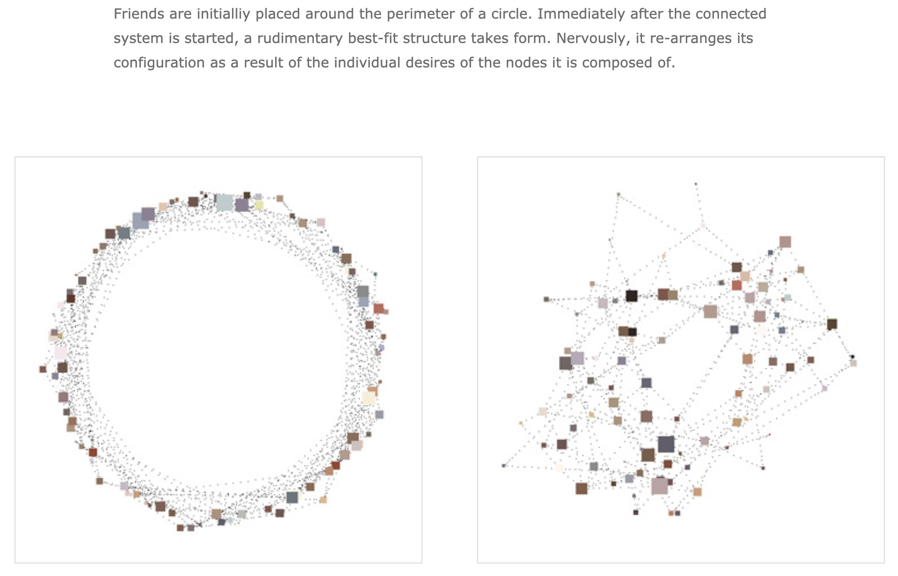

Happy Place March 2004 Jared Tarbell
Happy Place is my favorite piece by Jared and it perfectly exemplifies what I think is the greatest aspect of his art. Before finding Happy Place, I had thought generative art was a medium which could only be appreciated by computer programmers (such as myself) and the like. Many generative pieces are interesting mainly due to the complexity of their algorithms which gave rise to them. In my opinion, the final products often do not stand on their own. However, Jared's art, particularly Happy Place, has this organic feeling to it uncharacteristic of other generative artworks. It seems to me that Jared looks towards nature for his algorithmic inspiration rather than a computer science textbook. Happy Place is a generative artwork accessible to not only the niche demographic of computer programmers but to many art connoisseurs of diverse backgrounds.
Jared pairs Happy Place with this description of the algorithm (w/ supplementary images) that I also find incredibly interesting.
In his explanation, Jared uses terms like 'nervously' and 'desires' when referring to nodes, a theoretical entity popularly utilized by computer scientists when explaining algorithms. By attributing human emotions and behavior to these entities, Jared reveals the nature of his algorithm in a much more intuitive fashion than if he were to present a mathematical definition, difficult to interpret by those unversed in algorithmic design.